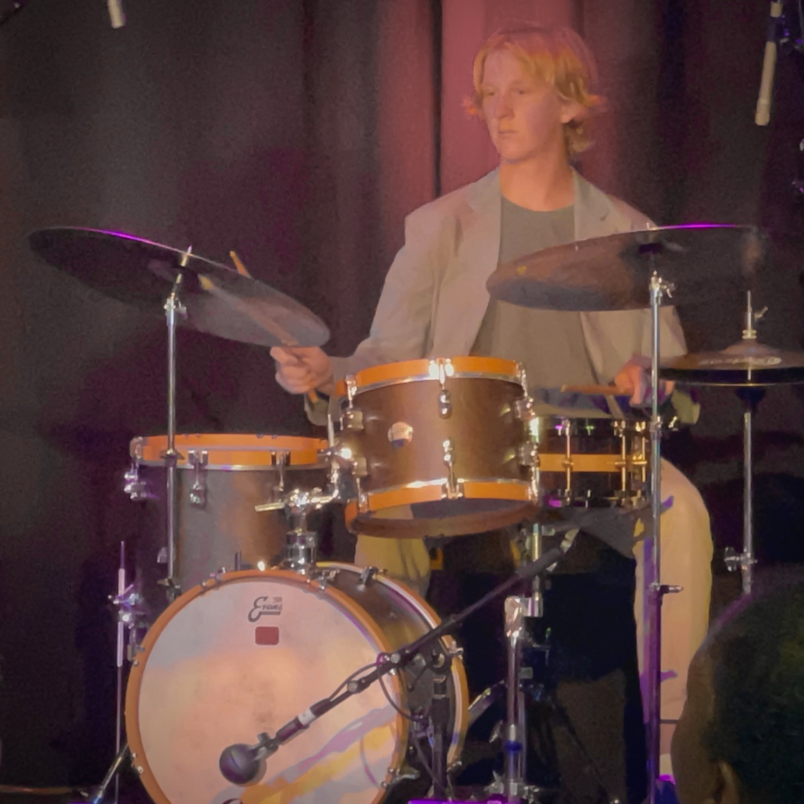

Who I Am
I'm Brayson Young - a musician, visual creator, and innovator exploring how sound and image connect to form a story. I'm always exploring new skills and interests, whether it's performing, coding my own portfolio website to avoid paying fees, or discovering new ways to express my creativity. Outside of music and graphic design, I have a deep interest in the music industry and how it works. More on that later...
Musical Approach
I’ve been involved with music for nearly 15 years. That's basically
my whole life.
I perform and record as a drummer, but I regularly
include bass and keys as part of my own recording and songwriting process.
Currently, I am working on a full-length solo album showcasing my
multi-instrumental skills and songwriting ideas.
Stay tuned.
On stage, I aim to serve the music in a way that creates energy
and connects with the audience.
In the studio, I focus on detail, precision, and the listening experience.
Both of these approaches lend themselves to my musicality
in a professional, versatile way.
Visual Approach
I've been told my visual work complements the innovation I bring to music. I approach visual work with creativity and strategy. Beyond graphic design, I leverage an understanding of certain aspects of an industry, audience behaviors, and inherent human biases to create an effective visual story. As you may have seen on my visuals page , all of the artist images and main content of the posters (except J. Cole) were taken by me at the show the poster is promoting. I believe this makes the work feel more alive and real. Every poster, social media post, or short form video is built on a foundation: artistic vision backed by the strategy and knowledge of how to make it work.
The Big Picture
My interest in how the music industry works has led me to explore how how marketing and communications work intersects with creative output. Ultimately, I want to learn how to better share my work and connect with people who will enjoy it. My creative background informs my approach; from musical storytelling to visual branding, I always strive to combine strategy with artistic expression. I am currently pursuing a dual degree in communications and jazz studies at the University of Washington while building myself in the music scene as a performer and producer. My big picture goal is to keep discovering and growing as an artist while sharing my work in a way that connects with people. Thank you for visiting my website and taking the time to learn more about me!
